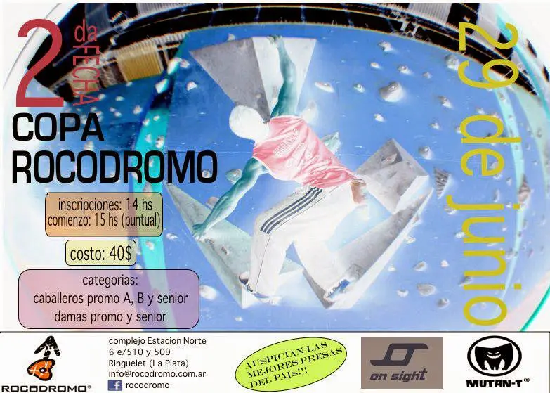
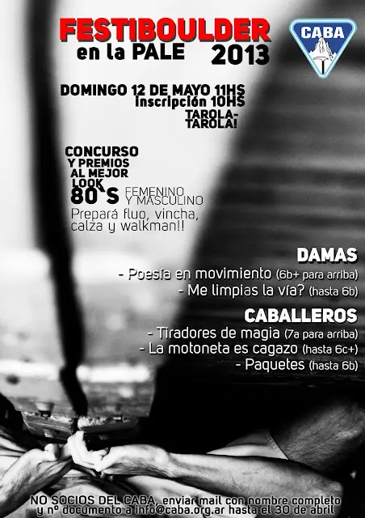
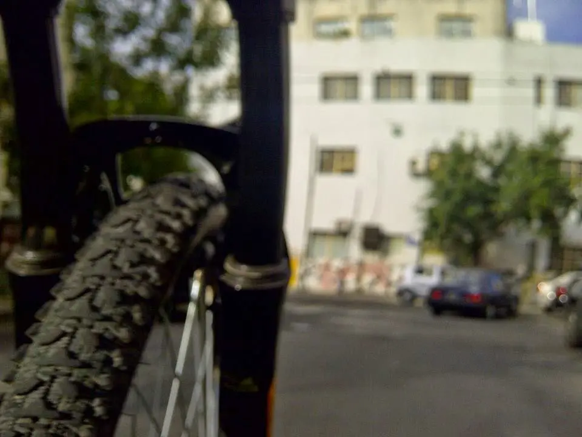

// FUERA DEL TRABAJO
Boulder La Plata
Un sábado toca ir a la ciudad de La Plata. Participar de los eventos es una forma de medir el entrenamiento, del mismo modo que se rinde un final en la facultad y a su vez fomentar el deporte.
1 de julio de 2013 · 1 minuto de lectura

Es momento de evaluar cuanto se ha mejorado y lo que se puede seguir corrigiendo.
En esta oportunidad, Copa Rocódromo. Poco más de 30 bloques repartidos en 5 dificultades, encadené unos 20. Luego de una pequeña manipulación de puntos me dejó en un 4to lugar. Al igual que en el último festivas que participé. No está mal, pero creo que algo más se puede dar.
| 3ro | ||||
| 4to | Luciano | Cismondi | Campus | 1060 |
| 5to |
Unos 80 escaladores se presentaron a competir y pasar la tarde en el muro. Muy buena gente, charlas escaladoras y algún dinámico que daba espectáculos de vuelo. Ahora a seguir entrenando un poco y ver la posibilidad de presentarse en la próxima fecha tentativa de octubre.
Viajes relacionados

Festiboulder | La Pale
Dejamos la resina para pasar a la piedra de verdad. Armada artificialmente, pero piedra de verdad a fin de cuentas.
Mayo 2013
Bariloche | Trekking
Salimos de la Ciudad de Bariloche, desde la base del Cerro Catedral, uniendo el Refugio Frey con la Laguna Jakob (Refugio San Martín).
Enero 2013
En bicicleta por la ciudad
Aunque cueste todo tiene su vida útil y llega un momento en el cual los repuestos tienen un precio significativo frente al valor de la bicicleta.
Septiembre 2012Festiboulder | La Pale
// EL SIGUIENTE PASO
TU PRODUCTO.
SU PRÓXIMA ETAPA.
Una primera conversación para entender el desafío y ver si puedo aportar valor.
↗ Hablemos de tu proyecto